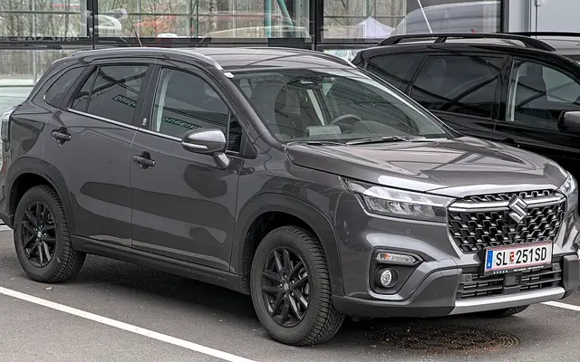

Par Motor › Precios por modelo › Suzuki SX4 y Across
Precio de segunda mano · noviembre de 2026¿Cuánto vale un Suzuki SX4 y Across de segunda mano?

Precio justo estimado de un Suzuki SX4 y Across usado en España, año por año, con los kilómetros normales para su edad y en buen estado: de 4.100 € a 50.200 €. Para tasar el tuyo con sus kilómetros reales y su estado, usa el tasador gratis.
Precios del Suzuki SX4 y Across por año
SX4 (2006–2014)
Precio de nuevo: 1.5 112 CV, 15.000 € · 1.9 DDiS 120 CV, 19.500 € · 1.6 120 CV, 16.500 €
| Año | Km normales | 1.5 112 CV · Gasolina | 1.9 DDiS 120 CV · Diésel | 1.6 120 CV · Gasolina |
|---|---|---|---|---|
| 2014 | 100.000 km | 7.000 € | 8.900 € | 7.700 € |
| 2013 | 100.000 km | 6.600 € | 8.300 € | 7.300 € |
| 2012 | 100.000 km | 6.200 € | 7.800 € | 6.800 € |
| 2011 | 100.000 km | 5.700 € | 7.200 € | 6.300 € |
| 2010 | 100.000 km | 5.400 € | 6.700 € | 5.900 € |
| 2009 | 100.000 km | 5.000 € | 6.300 € | 5.500 € |
| 2008 | 100.000 km | 4.700 € | 5.900 € | 5.100 € |
| 2007 | 100.000 km | 4.300 € | 5.500 € | 4.800 € |
| 2006 | 100.000 km | 4.100 € | 5.100 € | 4.500 € |
Across (2020–hoy)
Precio de nuevo: 2.5 Plug-in (enchufable) 306 CV, 54.000 €
| Año | Km normales | 2.5 Plug-in (enchufable) 306 CV · Híbrido enchufable |
|---|---|---|
| 2026 | 5.000 km | 50.200 € |
| 2025 | 20.000 km | 42.900 € |
| 2024 | 35.000 km | 40.000 € |
| 2023 | 50.000 km | 37.300 € |
| 2022 | 65.000 km | 34.800 € |
| 2021 | 80.000 km | 31.200 € |
| 2020 | 95.000 km | 27.300 € |
Kilómetros normales: 15.000 al año en gasolina, híbridos y eléctricos, y 20.000 en diésel, con un máximo de 100.000 km (por encima no tasamos: el precio depende demasiado del historial de cada coche). Cifras redondeadas a 100 €.
Preguntas frecuentes
¿Cuánto vale un Suzuki SX4 y Across de segunda mano?
Según el año, la versión y los kilómetros, un Suzuki SX4 y Across usado vale hoy de 4.100 € a 50.200 € en España. El más barato de nuestra tabla es un 1.5 de 2006 (4.100 €) y el más caro un 2.5 Plug-in (enchufable) de 2026 (50.200 €). Son precios justos estimados entre particulares y profesionales, con los kilómetros normales para su edad y en buen estado.
¿Cuánto valor pierde un Suzuki SX4 y Across al año?
Con unos años encima, un Suzuki SX4 y Across pierde alrededor de un 7 % de su valor cada año (calculado sobre el 2.5 Plug-in (enchufable) de la generación Across). Los primeros años la caída es mayor y a partir de los 70.000 km se acelera.
¿Qué motorizaciones tiene el Suzuki SX4 y Across?
En nuestra base de datos hay versiones gasolina, diésel y híbrido enchufable, en 2 generaciones: SX4 y Across.
¿Cómo sé si me piden demasiado por un Suzuki SX4 y Across?
Abre el tasador de Par Motor, elige el Suzuki SX4 y Across, el año y los kilómetros reales, y escribe lo que te piden. Te diremos si está por debajo del precio justo (chollo) o por encima (caro). Es gratis y no pide registro ni matrícula.
Otros Suzuki
Compara su coste real
El precio de compra es solo una parte. Mira cuánto te costaría al mes con combustible, seguro, neumáticos, mantenimiento y lo que pierde de valor.
Abrir el comparador →